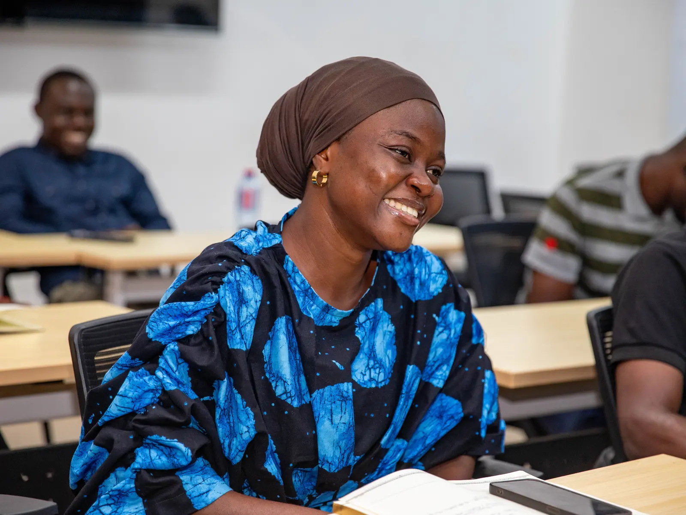
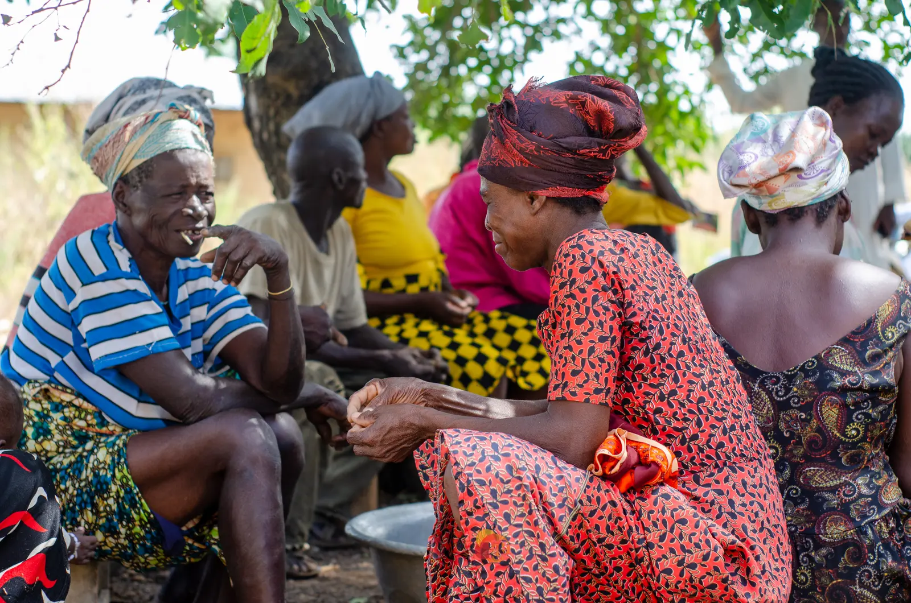
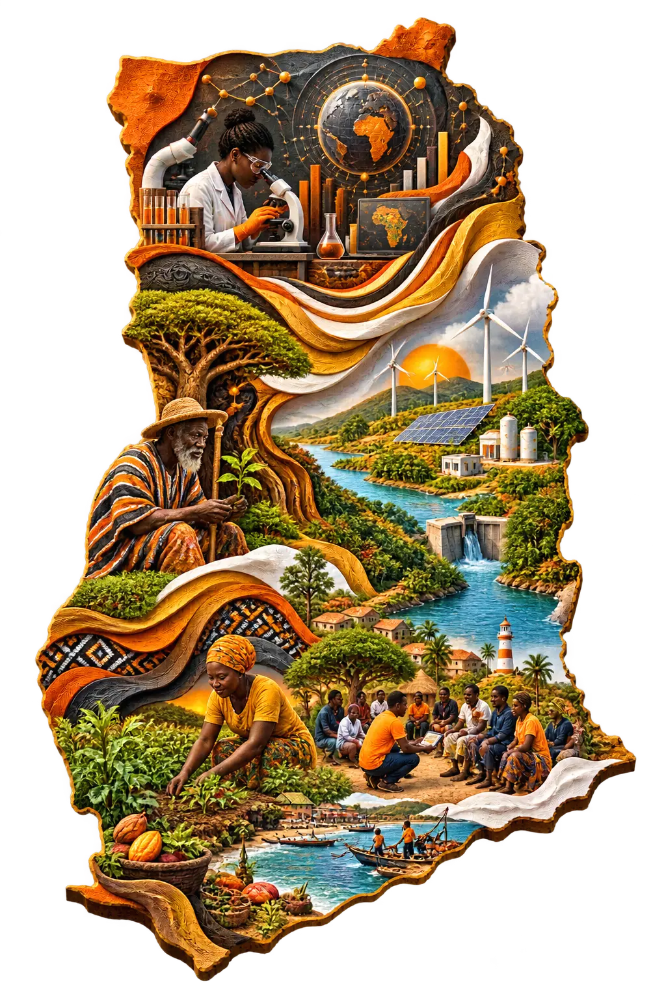
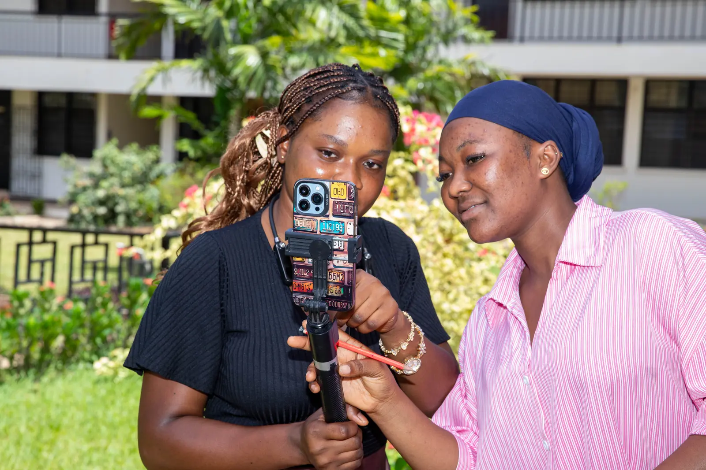

Make climate evidence usable.
Translate credible knowledge into practical tools, stronger institutions and community-rooted action.

01About BTS
We bring climate evidence into conversation with policy, institutions, media and lived experience.

Locally led · socially inclusiveWho we are
Beyond the Science is a Ghana-based knowledge-to-action hub advancing climate resilience and sustainable development.
We work with women, youth and vulnerable communities to translate research into tangible action through capacity building, knowledge brokering, community resilience projects, private-sector advisory and creative storytelling.

Programme footprint
Tap a highlighted location to explore how BTS connects institutional and public work across Ghana.
National media, policy dialogue and climate storytelling connect evidence to wider public action.
Translate credible knowledge into practical tools, stronger institutions and community-rooted action.
Build with the people who hold local experience, institutional responsibility and the power to sustain change.
Track learning, influence, capability and the decisions that programmes make possible.

Knowledge brokering
Research does not create change by existing. It has to be interpreted, trusted, communicated and connected to an opportunity for action.
BTS works across those transitions—from researchers to policymakers, from programme rooms to national media, and from institutional language to public understanding.
See the workWhat we do
Learning programmes for youth, journalists, institutions and climate practitioners.
Collaborative tools and labs that connect research with real institutional needs.
Television, radio, digital, virtual reality and creative formats that widen climate understanding.
Climate finance, ESG and evidence-informed support for organisations navigating transition.